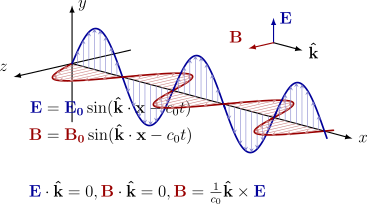

|
|
|
Generar una Web Interactica con LaTeX (usando Make4ht e IA)
| Transforming LaTeX Documents into Interactive Websites (with AI & Make4ht) |
wmora2@gmail.com
Investigador independiente
Costa Rica
Recibido: 2 de Mayo de 2025 |
| Aceptado: 1 de agosto de 2025 |
Resumen: Este documento presenta una plantilla configurada para convertir documentos LaTeX en páginas web interactivas utilizando Make4ht. Se abordan temas como la configuración de Make4ht, la conversión de entornos complejos a imágenes SVG, y con la asistencia de la IA, la inclusión de actividades interactivas con HTML, JavaScript y CSS, y la integración de elementos multimedia como applets de GeoGebra y videos de YouTube. El enfoque bimodal permite generar tanto PDF como HTML, aprovechando las ventajas de cada formato: el PDF para impresión y citación formal, y el HTML para accesibilidad e interactividad en dispositivos digitales.
Palabras Clave: Palabras clave: Make4ht, LaTeX, HTML, interactividad, JavaScript, IA
Abstract: This document presents a configured template for converting LaTeX documents into interactive web pages using Make4ht. It addresses topics such as Make4ht configuration, the conversion of complex environments into SVG images and, with the assistance of AI, the inclusion of interactive activities using HTML, JavaScript, and CSS. The template also covers the integration of multimedia elements like GeoGebra applets and YouTube videos. This bimodal approach allows for the generation of both PDF and HTML, leveraging the advantages of each format: PDF for formal printing and citation, and HTML for accessibility and interactivity on digital devices.
Keywords: Make4ht, LaTeX, HTML, interactivity, JavaScript, AI
1. Introducción
Un documento .tex se puede compilar de varias maneras. En nuestro caso, necesitamos una salida bimodal: un documento PDF y un documento HTML (para añadir contenido interactivo).
El formato HTML ofrece accesibilidad, interactividad y un mayor alcance en el entorno digital actual. Generar el HTML desde un archivo LaTeX permite aplicar revisiones y/o modificaciones al archivo .tex sin necesidad de tener que volver a editar manualmente la salida HTML.
Mientras el formato PDF es ideal para impresión y citación formal, el HTML se adapta a cualquier dispositivo y permite integrar elementos dinámicos como visualizaciones, actividades interactivas y contenido multimedia. Este enfoque promueve la ciencia abierta y la educación digital al hacer el contenido más flexible y accesible.
Para obtener un documento PDF, compilamos con PDFLaTeX. Para traducir el documento .tex y obtener un sitio web, con su archivo de estilo .css, compilamos con Make4ht. El archivo .css se modifica y/o se amplia con un archivo personalizado config.cfg. En la Figura 1 se muestra el proceso de manera simplificada.
La plantilla .tex (en la que esta basada este documento) está implementado con código que ejecutan tanto PdfLaTeX como Make4ht. Pero hay partes en que solo nos interesa una salida HTML y otras en las que solo nos interesa la salida PDF, para esto, además del texto común, usamos comandos que PDFLaTeX ignora y que Make4ht sí compila y viceversa.
Make4ht se enfoca en la estructura del contenido y, si no hay errores de compilación fatales, entrega un archivo HTML correcto pero con un diseño simple. Este artículo es un ejemplo (y al mismo tiempo es una plantilla) de cómo agregar diseño web moderno y responsivo, de manera manual, a través de un archivo de configuración.
Este documento considera las tareas comunes en la implementación de material didáctico en matemáticas y agrega un archivo de configuración para la salida moderna y correcta en HTML. La manera de configurar Make4ht para lograr este objetivo se describe en la sección 7.
¿Qué nivel necesitamos? Para usar la plantilla, se requiere ser un usuario normal de LaTeX y posiblemente conocer cosas básicas de HTML y CSS (sino, podríamos empezar, por ejemplo, con [7] y [8]). La parte interactiva requiere un conocimiento básico de HTML, CSS y JavaScript.
Además, si queremos modificar la plantilla, necesitamos saber configurar Make4ht. Las lecturas recomendads son la sección 7. y la documentacion de Make4ht, [4].
La IA se puede usar como asistente para generar código LaTeX, código de estilo CSS y scripts interactivos en JavaScript, con peticiones en lenguaje natural. Pero en el estado actual de la IA, para tareas más complejas, hay un aumento significativo en la productividad si hacemos peticiones muy específicas con modelos de código y en lenguaje técnico preciso. También debemos estar atentos a las repuestas de la IA, porque además de algún error de lógica, ocasionalmente nos da respuestas basadas en información desactualizada (lo cual nos genera errores de compilación), o al no ser adecuadamente específicos, nos puede dar código fuera de contexto e innecesariamente complicado.
2. Una plantilla.tex configurada
Tenemos un comprimido plantilla.zip (si no abre, solicitarla al correo del autor) que viene con un archivo plantilla.tex, con figuras y un archivo de configración config.cdf (entre otras cosas) que PDFLaTeX compila bien y Make4ht traduce bien a HTML.
Asumimos que tenemos una instalación TeX completa y actualizada al 2025 (las más populares son TeXLive, MikeTeX y MacTeX). Esta actualización ya viene con Make4ht. Esto es necesario porque varias cosas funcionan bien con la última actualización, sino podríamos tener errores de compilación o comportamientos inesperados.
En el código 1 podemos ver el inicio de la plantilla.tex
\documentclass[fleqn,oneside]{article} % Puede usar también book, etc. \input{Paquetes/WebPreambuloyEntornos.tex} \input{Paquetes/ComandosdelUsuario.tex} \title{El título} \author{El autor} \date{} % \begin{document} \maketitle \solopdf{% PDFLaTeX->pdf \tableofcontents } % \solomk{ % Make4ht -> html % \cejilla{Tabla de contenidos}{\tableofcontents} % Botón para el Contenido % } \section{Introducción} %... código LaTeX usual... \end{document}
Paquetes soportados. Podemos agregar paquetes y comandos personales, en el archivo ComandosdelUsuario.tex que está en la carpeta "Paquetes". Make4ht soporta una lista amplia de paquetes esenciales: Incluye los paquetes que usualmente usamos, solo debe mantener los comandos personales "simples".
Paquetes no soportados. Hay varios paquetes como Nicematrix, Polynomial, hhline, etc. que no son soportados
por Make4ht. Si tenemos código con paquetes no soportados, como veremos más abajo, usamos el comando
\solopdf{...} para que Make4ht los ignore y, en el .html, se pueden incluir imágenes o podemos usar
código equivalente (simplificado) en .tex, que sea soportado por Make4ht y usar el comando
\solomk{...} (Make4ht lo compila pero PDFLaTeX lo ignora), o insertar directamente un equivalente
en código HTML, con el comando \insertarhtml{...}. Use la IA como asistente, es buena
idea.
La estructura de la carpeta de trabajo se muestra en la Figura 2.
- 1.
- La carpeta images contiene figuras .png, .svg y .pdf. Para HTML son preferibles los formatos
vectoriales como SVG (o sino PNG con buena resolución). Esto se puede personalizar un poco,
por ejemplo usando Inkscape.
Podemos usar
\includegraphics[width=0.x\textwidth]{...}con Make4ht, pero Make4ht requiere conocer sus dimensiones para pasarlas al HTML, sino las pasa "tal cual". Las dimensiones son archivos .xbb que se obtienen corriendo un script con ese propósito en la carpeta de figuras.Algunas figuras generadas con entornos LaTeX las podemos convertir, de manera automática, con el paquete ltximg [3]. Lo vemos en el apéndice 3.
- 2.
- La carpeta "js" contiene los scripts JavaScript (interactivos)
- 3.
- La carpeta "css" contiene archivos de estilo .css personalizados y el archivo plantilla.css que genera automáticamente Make4ht
- 4.
- La carpeta Paquetes contiene el archivo WebPreambuloyEntornos.tex y el archivo
ComandosdelUsuario.tex - 5.
- La carpeta SitioWeb recibe, con la compilación Make4ht , los archivos plantilla.css y plantilla.html (si la carpeta no está, entonces la crea). También recibe algunas figuras necesarias que Make4ht genera.
- 6.
- El archivo config.cfg es el archivo de configuración para este documento, mayormente habilita, deshabilita o modifica entornos creados por Make4ht e inserta código CSS para el diseño web de la salida HTML. Este archivo ya viene implementado para esta plantilla. Para comprender y/o modificar algo, es necesario leer la sección 7.
- 7.
- El archivo plantilla.tex es una parte de este documento, solo con cosas relevantes, para editar un documento propio. El archivo iplantilla.tex viene con código de las actividades interactivas.
2.1 Compilar esta plantilla
Make4ht ofrece varias opciones de compilación a través de un archivo de configuración y/o con opciones entre comillas. En este documento mayormente compilamos en la terminal, la línea de compilación se muestra en la el código 2
make4ht --utf8 -c config.cfg -f html5 -d SitioWeb plantilla.tex "mathml,mathjax,svg,Gin-dim" % opción limpiar: agregar -m clean (y quitar después) % opción debug: agregar -a debug
En esta plantilla, el archivo config.cfg puede cargar el script MathJax más personalizado, si se ocupan paquetes y comandos adicionales. Ver sección 7.
- 1.
- Make4ht permite configurar el HTML de salida. La opción -c config.cfg "inyecta" nuestro código de configuración de entornos y también código de estilo CSS en el archivo plantilla.css, de tal manera que prevalezca sobre el código CSS que genera por defecto Make4ht (que es muy básico y a veces no conveniente).
- 2.
- La opción -d SitioWeb inserta en SitioWeb, en la carpeta de trabajo, los archivos .css y HTML (si no está la carpeta, la crea).
make4ht filename.tex "op1,op2,..,optn"
En el capítulo de [4, Tex4ht (2024)] hay una lista de opciones que se pueden aplicar. Algunas opciones son:
- 1.
- Mathml. Usa MathML para las fórmulas.
- 2.
- Mathjax. Renderiza fórmulas con MathJax. En nuestro caso, esta opción esta incluida en el archivo config.cfg con una configuración adicional.
- 3.
- SVG. Convierte ecuaciones e imágenes a SVG. De acuerdo al sistema (Linux, Windows, macOS) y a las librerías instaladas, las figuras .pdf que se incluyen, se traducen automáticamente a .svg. Sino hay que hacerlo "manualmente".
- 4.
- frames. Añade navegación (tabla de contenidos) con marcos. Por ejemplo, si incluimos
secciones, compilamos con
make4ht -l archivo.tex "mathml,svg,frames,1" - 5.
- footnotes-in. "Footnotes" al final de cada sección. Por ejemplo,
make4ht archivo.tex "3,sec-filename,fn-in - 6.
- footnotes-at-end. "Footnotes" en una página final. Por ejemplo,
make4ht -f html5 archivo.tex "footnotes-at-end" - 7.
- split-level=1. Divide el HTML por capítulos. Por ejemplo,
make4ht -f html5 archivo.tex "split-level=1" - 8.
- section+. Fuerza división por secciones. Por ejemplo,
make4ht -f html5 archivo.tex "section+" - 9.
- url-enc. Se usa cuando hay url’s con caracteres especiales. Por ejemplo,
make4ht -f html5 archivo.tex "url-enc" - 10.
- charset=utf-8. Usa UTF-8 para codificación. Por ejemplo,
make4ht -f html5 archivo.tex "charset=utf-8"omake4ht -u -f html5 archivo.tex - 11.
- table. Mejora las tablas HTML. Por ejemplo,
"make4ht -f html5 archivo.tex "table,longtable" - 12.
- info. Agrega metadatos.
- 13.
- tidy. Limpia y mejora el HTML final. Por ejemplo,
make4ht -f html5 archivo.tex "tidy" - 14.
- clean. Elimina archivos auxiliares tras la compilación. Por ejemplo,
make4ht -m clean -f html5 archivo.tex - 15.
- jats. Salida en XML JATS (para revistas científicas). Por ejemplo,
make4ht -f html5 archivo.tex "jats"
2.11 Errores de compilación
Make4ht compila el archivo .tex con htlatex. Esta compilación usa "motores" como PDFTeX o LuaTeX, y soporta una cantidad suficiente de paquetes básicos. La copilación genera un dvi y agrega etiquetas HTML. La primera fuente de errores de compilación están en el código .tex como es usual. Una vez superada esta etapa, podrían haber errores en la traducción a HTML. Hay que evitar que el HTML se "rompa" (evitar que el DOM quede mal formado). Por ejemplo por etiquetas HTML que abren pero no cierran o caracteres extraños que inyecttan otros paquetes o por fórmulas o tablas muy complejas.
En la compilación con Make4ht, una "advertencia" del tipo
[WARNING] domfilter: DOM parsing of plantilla.html failed:[WARNING] domfilter: /home/.../ ... nbalanced Tag (/p) [char= ]
significa que la estructura del documento (DOM) se ha roto y la "advertencia" nos dice que una o varias cosas ya no van a salir bien. Lo normal es corregir el problema directamente o hacer modificaciones. Como en cualquier compilación normal, revisamos el .log y el .html, para tratar de aislar el problema y corregirlo. Ocasionalmente, hay que limpair el archivo .aux!
El archivo de configuración en plantilla.zip (sino abre, consulte con el autor) ya incluye la configuración de los entornos que usamos, para evitar la mayoría de este tipo de problemas. Pero los errores puede aparecer si incluimos paquetes no soportados, comandos muy complejos o nuevos entornos que no siguen las reglas de configuración. Ver sección 7..
caption. Cuando una macro expansiva (como \caption) contiene comandos con expansión frágil, la pila de
parámetros puede desbordarse y aparece el error
! TeX capacity exceeded, sorry ...
Para resolver el problema agregamos el comando \protect antes de los comandos problemáticos (comandos
frágiles). Estos comandos puede ser cosas como \tfrac, \cosh o comandos personales (en los
que no se ha usado \DeclareRobustCommand). Por ejemplo deberíamos poner (si tuvieramos
problemas)
\caption{Texto $ \protect\cosh t $}\caption{Texto $ \protect\micomando $}
tempa. Un error con algo como "! Undefined control sequence.l... \tempa" ocurre a veces porque hemos
inyectado código HTML sin "escapar" caracteres, frecuentemente se refiere al caracter # en código \Css{} o
\HCode{}. Por ejemplo
\Css{...background-color: #f8f8f8;font-size:83%...}
Debería ser: \Css{...background-color: \#f8f8f8;font-size:83\%...}
Es preferible en array usar en la última fila con \\ (cambio de línea)
Es preferible usar todos los comandos expandidos, por ejemplo en vez de \bc usar \begin{center}
2.2 Comandos importantes.
Como estamos en un ambiente bimodal, algunas cosas se pueden usar tanto para PDFLaTeX como para Make4ht, pero hay otras cosas que son exclusivas para PDFLaTeX y que talvez hay algún equivalente para Make4ht y viceversa.
Observe que tanto PDFLaTeX como Make4ht, compilan todo el archivo .tex, solo que algunos bloques de código son exclusivos, por razones especiales, para PDFLaTeX y otros para Make4ht.
En esta plantilla tenemos algunos comandos personalizados (están en WebPreambuloyEntornos.tex):
\solopdf{#1}: | PDFLaTeX ejecuta el código y Make4ht lo ignora. | |
\solomk{#1}: | Make4ht ejecuta el código ... y PDFLaTeX lo ignora. | |
\insertarhtml{#1}: | Código HTML puro con Make4ht (PDFLaTeX lo ignora) | |
\ifdefined\HCode ...\fi: | Make4ht ejecuta el código y PDFLaTeX lo ignora. | |
\ifdefined\HCode ...\else...\fi: | PDFLaTeX ejecuta el código después ... de \else. |
|
\linea: | Una línea gris delgada, que es apropiada para HTML y PDF | |
\bigskip: | Para Make4ht se ha definido como un <div> de cierta altura |
|
Comandos adicionales para generar código HTML desde LaTeX se muestran en la sección 5.
Ejemplo. En el código 3 se muestra cómo incluir una figura .pdf con PDFLaTeX e incluir la misma figura
en formato .svg en HTML (Make4ht puede hacer la conversión automática de .pdf a .svg, pero depende del
sistema, las librerías instaladas y del tipo de archivo .pdf).
\solopdf{% PDFLaTeX-> pdf \begin{center} \includegraphics[scale=0.35]{images/sumaRiemann.pdf} \captionof{figure}{Figura \tt{.pdf}} \end{center} } \solomk{% Make4ht -> html \begin{center} \includegraphics{images/sumaRiemann.svg} % o también \includegraphics[width=0.3\textwidth]{images/sumaRiemann.png} \captionof{figure}{Figura \tt{.svg}} \end{center} }
En este caso, la figura sumaRiemann.svg ha sido escala adecuadamente (con Inkscape) para la salida .html. Hay varios programas para escalar figuras. Las figuras .png, .jpg y .pdf también se puede incluir con Make4ht (al 2025) y escalar, siempre y cuando hayamos generado el respectivo archivo .xbb (dimensiones de la figura) para cada figura.
2.3 Fuentes
En la plantilla.tex, para la compilación con PDFLaTeX usamos las fuentes Palatino, Tgpagella, Eucal, Beramono y Helvetica. Para la salida HTML, Make4ht carga en el archivo de configuración, la fuentes Google Lora, para el texto. Si no declaramos una fuente, el navegador usa una fuente genérica (depende del navegador), por ejemplo Times New Roman o Liberation Serif o Times o Georgia o Apple Garamond.
2.4 Figuras
En HTML, los formatos mejor soportados son PNG, JPG y SVG. Las figuras .PDF se pueden
convertir a SVG o a PNG (a veces de manera automática). También se pueden incluir con un
<iframe>...</iframe>
- 1.
- PNG. Incluir una figura PNG no requiere hacer cambios, compila igual con PDFLaTeX y Make4ht.
\includegraphics[width=0.7\textwidth]{images/fig2.png}Para escalar una figura PNG o JPG, usamos una opción más adecuada para la salida HTML: La opción,
[width=0.x\textwidth](funciona para PDFLaTeX también).Podría pasar que Make4ht no logre escalar una figura PNG si el archivo viene con información que Make4ht no puede manejar (estos archivos no tiene código estándar). En ese caso, se incluye la imagen con medidas absolutas y, de ser necesario se escala manualmente con algún software.
Estas figuras se inyectan en el HTML con algo como (si hubo éxito escalando)
<img alt=’PIC’ class=’includegraphics’ src=’images/fig2.png’ width=’310’ />.Es decir, también podemos insertar figras PNG desde el archivo .tex. Un ejemplo se muestra en el código 4
Código 4: Insertar figura con código HTML \insertarhtml{% Make4ht -> html <img alt=’PIC’ class=’includegraphics’ src=’images/fig3.png’ width=’150’ />}
- 2.
- SVG. El formato SVG (Scalable Vector Graphics) se usa para mostrar gráficos vectoriales, escalables y
nítidos, en la web.
Se puede incluir incluir una figura SVG con Make4ht, usando el código
\solomk{\includegraphics{images/fig1.svg}}\caption{...}\label{...}PDFLaTeX puede incluir figuras SVG con el paquete "svg", pero solo funciona para PDFLaTeX.En Linux (digamos Ubuntu 24) generalmente (si están instaladas la librerías rsvg-convert y pdf2svg), al compilar con Make4ht, las figuras fig.pdf se convierten automáticamente a fig-.svg y se insertan en el HTML. Aunque hay figuras PDF que por alguna configuración no se logran convertir. Estas librerías están disponibles también en Windows.
Make4ht inyecta la figura .svg en el HTML con algo como
<object class=’graphics’ data=’images/fig1.svg’ type=’image/svg+xml’></object>- (a)
<object>...,/object>es un elemento HTML que incrusta contenido externo (svg, pdf, html, etc.) como un "documento embebido".- (b)
- Estas figuras SVG no se pueden escalar con la opción usual
[width=0.x\textwidth]. El navegador web las inserta con un tamaño absoluto. Esto se debe a que una figura SVG se puede escalar si accedemos a su atributo viewBox (sistema de coordenadas), pero Make4ht no hace eso, solo inserta la figura. - (c)
- Si fuera necesario escalar estas figuras SVG, se pueden usar programas externos.
- (d)
- Podemos escalar las figuras SVG visualmente (o con comandos en terminal) por ejemplo
con con Inkscape ( u otro programa equivalente), como se muestra en la Figura 4

Los navegadores no renderizan los figuras PDF como imágenes (excepto con elementos como <object>). A veces Make4ht puede convertir estas figuras automáticamente (en la compilación) a PNG o SVG, mediante herramientas externas (como ghostscript o pdf2svg). Esto depende de si en el sistema están instaladas estas herramientas y depende también de la información que Make4ht pueda obtener de la figura (la codificación de las figuras no es estándar).
2.5 Entorno minipage
La práctica usual de colocar un minipage al lado de otro minpage está configurado en el archivo config.cfg (porque necesitamos manejar de manera correcta las dimensiones de cada minipage). En la versión más reciente de Make4ht (2026) ya viene configurado internamente.
Es conveniente, para que Make4ht traduzca bien, usar el formato que se muestra en la Figura 5 y en código 54
\begin{minipage}{1.0\textwidth} \begin{minipage}{0.x\textwidth} % Contenido 1... \end{minipage}\hfill\begin{minipage}{0.y\textwidth} % Contenido 2... \end{minipage} \end{minipage}Ejemplo. En el código 6 se muestra cómo colocar, en un entorno minipage, texto a la izquierda y una figura a la derecha, con
\captionof{figure}. Agregamos un par de líneas horizontales con \linea (definida
en el preámbulo, correcta para PDFLaTeX y Make4ht).
\linea \begin{minipage}{1.0\textwidth} \begin{minipage}{0.6\textwidth} \vspace{-2\baselineskip} % solo aplica para pdf El espacio Euclidiano es $\R^2$, con la métrica \[ ds^2=dx^2+dy^2 \] En este modelo, la distancia más corta entre dos puntos es una línea recta \end{minipage}\hfill\begin{minipage}{0.35\textwidth} \begin{center} \includegraphics{images/fig3.png}\captionof{figure}{Camino más corto} \end{center} \end{minipage} \end{minipage} \linea
El espacio Euclidiano es , con la métrica
En este modelo, la distancia más corta entre dos puntos es una línea recta

2.6 Ambiente tikzpicture
Make4ht traduce bien, en general, los ambientes tikzpicture. Con cosas muy complicadas todavía tene-mos la
opción de recortar la figura con Inkscape u otro software.
Ejemplo. El código 7 muestra un diagrama generado con tikz.
\begin{center} \begin{tikzpicture} \matrix (m) [matrix of math nodes, row sep=3.5em, column sep=3.5em, nodes={anchor=center}] {A & A[1] \\ A’ & A’[1] \\}; \path[-stealth] (m-1-1) edge node [above] {$x$} (m-1-2) (m-2-1) edge node [above] {$y$} (m-2-2) (m-1-1) edge node [right] {$z$} (m-2-1) (m-1-2) edge node [right] {$t$} (m-2-2); \end{tikzpicture} \end{center}
Ejemplo. El código 8 muestra parte del código para generar un figura con tikz
\begin{tikzpicture}[scale=0.7, x=(-15:1.2), y=(90:1.0), z=(-150:1.0), line cap=round, line join=round, axis/.style={black, thick,->}, vector/.style={>=stealth,->}] ... % El código lo puede ver en el archivo "plantilla.tex" \end{tikzpicture}

2.7 Matrices, ecuaciones y arreglos
Make4ht traduce estos entornos sin problema. Entornos demasiado complejos, posiblemente sea mejor, insertarlos en el HTML como una imagen SVG, como se indica en el apéndice 3., o generar el equivalente HTML con IA, si se pudiera.
El código completo de algunos ejemplos, se puede ver en el archivo plantilla.tex
- 1.
- El código 9 muestra un ejemplo del entorno equation con underbrace
Código 9: equation con underbrace \begin{equation} \norm{f - L}_{\infty} = \overbrace{\abs{\frac{K_2}{2}}}^{\mathclap{\text{worst $f’’(x)$ }}}\underbrace{\left(\frac{h}{2}\right)^2}_{\mathclap{\text{worst (b - a)}}} \end{equation}
(1) - El código 10 muestra un ejemplo del entorno equation con cases
Código 10: equation y cases \begin{equation}\label{eq:cases} S_{i,t}= \begin{cases} \begin{cases} [x_{i,t}=X^*, r_{i,t}=1] & \text{if $\max\{X_{i,t}\}=X^*$} \\ [x_{i,t}=\max\{X_{i,t}\}, r_{i,t}=0] & \text{if $\max\{X_{i,t}\} \neq X^*$} \end{cases} &\text{if $\sum_{i=1}^I u_{i,t-1}= \theta^{t-2} X^*$}\\ \begin{cases} [x_{i,t}=1, r_{i,t}=1] & \hspace{\maxmin} \text{if $\min\{X_{i,t}\}=1$} \\ [x_{i,t}=\min\{X_{i,t}\}, r_{i,t}=0] & \hspace{\maxmin} \text{if $\min\{X_{i,t}\} \neq 1$} \end{cases} &\text{otherwise} \end{cases} \end{equation}
Hacemos referencia a los entornos en la manera usual.(2)
El código:
En la ecuación \ref{eq:cases}, o el formato \eqref{eq:cases}, se tiene que ...produce: En la ecuación 2, o el formato (2), se tiene que ...
- Entorno equation con array
- Entorno pmatrix con block
2.8 Paquete subfigure.
Usamos este paquete para colocar dos figuras, una al lado de la otra, con diferentes caption. El archivo de
configuración tiene el código para manejar el entorno subfigure en la traducción a HTML. En la Figura 1,
al inicio de este documento, usamos un código bimodal, porque usamos figuras .pdf para el PDF
y el formato .svg para el HTML. El código 11 muestra parte de la edición al inicio de este
documento.
\solomk{% Subfiguras con .svg. Make4ht -> html \begin{figure}[h] \centering \begin{minipage}{1.0\textwidth} \centering \begin{subfigure}{0.4\textwidth} \centering \includegraphics{images/fig0a.svg} \caption{PDFLaTeX} \label{fig:fig0a} \end{subfigure}% ~ % espacio \begin{subfigure}{0.4\textwidth} \centering \includegraphics{images/fig0b.svg} \caption{Make4ht} \label{fig:fig0b} \end{subfigure}% % caption general \centering\caption{Compilar con PDFLaTeX o con Make4ht} \label{fig:fig0} \end{minipage} \end{figure}}
2.9 Tablas
Make4ht traduce correctamente a HTML tablas simples como otras un pco más elaboradas, por ejmplo tablas que utilizan paquetes como multirow, color o booktabs. Sin embargo, cuando se trata de estructuras más complejas como celdas combinadas de forma irregular, múltiples líneas horizontales o disposiciones no estándar es necesario recurrir a soluciones alternativas, como las que se ilustran en el apéndice 3.. Además, una vez generado el archivo HTML, es posible agregar interactividad directamente desde este mismo documento .tex. (sección 5.)
A continuación mostramos algunos ejemplos de tablas que Make4ht traduce bien a HTML.
- 1.
- El código 12 muestra una tabla con
\multicolumn. La salida es la Tabla 2Código 12: Tabla con multicolumn \begin{table}[h!!!] { % grupo \arrayrulecolor{lightgray} \begin{center} \begin{tabular}{ | l | c | c | c | c | c | c |}\hline\hline Tipo de Instrucción & opcode & & & & & \\\hline \multicolumn{1}{|r|}{\#bits} & 6 & 5 & 5 & 5 & 5 & 6\\\hline\hline Tipo-R & op & rs & rt & rd & shamt & funct\\\hline Tipo-I & op & rs & rt & \multicolumn{3}{c|}{dirección/inmediato}\\\hline Tipo-J & op & \multicolumn{5}{l|}{dirección objetivo} \\\hline \end{tabular} \caption{\label{tab:4.1}Tipos de instrucciones de código máquina MIPS} \end{center} } \end{table}
- 2.
- El código 13 muestra una tabla con
\multirowy con\rowcolor. La salida es la Tabla 3.Código 13: Tabla con multirow y rowcolor \begin{table}[h!!!] \centering \begin{tabular}{|l|l|l|l|} \hline \rowcolor{gray!30} \textbf{Categoría} & \textbf{Item} & \textbf{Cantidad} & \textbf{Precio} \\ \hline \multirow{2}{*}{Frutas} & Manzanas & 10 & \$5.00 \\ \cline{2-4} & Naranjas & 20 & \$8.00 \\ \hline \multirow{2}{*}{Vegetales} & Zanahorias & 15 & \$4.00 \\ \cline{2-4} & Papas& 25 & \$6.00 \\ \hline \end{tabular} \captionof{table}{Tabla sofisticada}\label{tab:4.2} \end{table}
- 3.
- El código 14 muestra parte del código de una tablas con color en las filas. Esta tabla se puede
traducir como una tabla "fija" o se puede traducir con un efecto "hover" sobre sus filas, como veremos
en la sección 5.. La salida es la Tabla 4.
Código 14: Tabla con color en las filas \begin{table}[h!!!] \centering {% grupo \footnotesize \renewcommand{\arraystretch}{1.5} \setlength{\arrayrulewidth}{0.5pt} \arrayrulecolor{headerblue!80} \rowcolors{3}{rowgray}{white} % Empieza a rayar desde la 3ra fila \begin{tabular}{cc||ccc||ccc||ccc||ccc} \toprule \rowcolor{headerblue!90} ... \end{tabular} } % grupo \caption{Tablas de verdad básicas} \end{table}
2.10 Listas de ejercicios
El documento plantilla.tex usa el paquete exsheets para manejar listas de ejercicios al compilar con PDFLaTeX. En el preámbulo podremos ver el código que muestra 15
\ifdefined\HCode % Paquete de ejercicios exsheets,no soportado por Make4ht \else % compila PDFLatex \usepackage[counter-format=se.qu,counter-within=section]{exsheets} \DeclareTranslation{english}{exsheets-exercise-name}{\textcolor{tverde}{Ejercicio}} \DeclareTranslation{english}{exsheets-question-name}{\textcolor{tverde}{Pregunta}} \DeclareTranslation{english}{exsheets-solution-name}{\textcolor{tverde}{Solución}} \SetupExSheets{ question/pre-body-hook = {\normalfont}, solution/pre-hook = {\par\medskip}, } \fi
Cuando compilamos con Make4ht, usamos el mismo código que en PDFLaTeX, solo que en el preámbulo se han definido los comandos para que PDFLaTeX lo interprete de una forma y Make4ht de otra, de tal manera que tengamos listas de ejercicios en ambos ambientes usando el mismo código.
- 1.
\hejersol{}{}. Este comando lo ignora PDFLaTeX y Make4ht lo convierte en un enunciado con un botón Ver/Ocultar, para ver la respuesta en el renglón que sigue.- 2.
\ejersol{}{}.Este comando funciona para PDFLaTeX y Make4ht. PDFLaTeX lo convierte en un ejercicio normal y, para ver las soluciones, se pone al final del documento
\solopdf{ \section*{Respuestas} \printsolutions }{}
Si compilamos con Make4ht, \ejersol{}{} se convierte en \hejersol{}{}. La idea es que a veces, un
mismo ejercicio tiene un enunciado en el PDF, digamos con una figura fija por ejemplo, mientras
que el enunciado en HTML no necesita la figura porque viene con otra cosa, por ejemplo un
script.
Ejemplo. En el código 16 se muestra una lista de ejercicios. La salida en PDF corresponde al formato del paquete exsheets, la salida en HTML es una lista de enunciados con un botón para ver/ocultar la respuesta. La plantilla.tex contiene el código para insertar el script que gobierna el botón y su acción.
% Ejercicio 1: \hejersol{Resuelve para $x$: $\frac{2}{3}x + 5 = 10$}{La solución es $x = \frac{15}{2}$}\\ % Ejercicio 2: \ejersol{Calcula el área de un cuadrado de lado 3 cm}{$9\ \text{cm}^2$}\\ % Ejercicio 3: \ejersol{Deriva $f(x) = 3x^2 + 2x - 1$}{$f’(x) = 6x + 2$}\\ % Ejercicio 4: \ejersol{Simplifica $\sin^2 \theta + \cos^2 \theta$}{$1$}\\ % Ejercicio 5: Solo PDFLaTeX \solopdf{\ejersol{Calcula la velocidad final si $v_0=10\,m/s$, $a=2\,m/s^2$ y $t=3\,s$}{$16\,m/s$} }\\ % Ejercicio 6: Solo Make4ht \solomk{\hejersol{Encuentra la energía cinética de un objeto de 5 kg moviéndose a 4 m/s}{$40\,J$} }\\ % Ejercicio 7: Solo Make4ht \hejersol{Halla la corriente si $V=12\,V$ y $R=4\,\Omega$}{$3\,A$}\\ % Al finaldel documento: \solopdf{ \section*{Respuestas} \printsolutions }{}Ejercicio 2..1 Resuelve la ecuación
2.11 Tabla de contenidos: Ver/Ocultar
La tabla de contenidos en el PDF se obtiene con \tableofcontents. Make4ht compila \tableofcontents y
genera una tabla de contenidos adecuada para el HTML.
La plantilla incluye un botón \cejilla{#1}{#2} que abre y cierra una ventana (un "desplegable"). Lo
podemos usar, entre muchas cosas, para desplegar el "Contenido" en la plantilla.html. Se requiere un script
cejilla.js y un archivo cejilla.css que ya están en las carpetas CSS y JS. El código 17 muestra la manera de
habilitar el botón. .
\begin{document} \maketitle \solopdf{\tableofcontents} % Genera la tabla de contenidos % Desplegable de propósito general \solomk{\cejilla{Tabla de contenidos}{\tableofcontents}}
Contenido
2. Una plantilla.tex configurada
2.1 Compilar esta plantilla
2.11 Errores de compilación
2.2 Comandos importantes.
2.3 Fuentes
2.4 Figuras
2.5 Entorno minipage
2.6 Ambiente tikzpicture
2.7 Matrices, ecuaciones y arreglos
2.8 Paquete subfigure.
2.9 Tablas
2.10 Listas de ejercicios
2.11 Tabla de contenidos: Ver/Ocultar
3. Convertir entornos en imágenes svg
4. Entornos definición, teorema, ejemplo, etc.
5. Agregar actividades interactivas
5.1 Scripts con JavaScript
6. Ejemplos de actividades interactivas
6.1 Intersección de Intervalos
6.2 Interpretación geométrica de la derivada
6.3 Un problema de optimización: Ejercicio y respuesta.
6.4 Sumas de Riemann con particiones regulares
6.5 Plano Tangente
6.6 Efecto hover en tablas
6.7 Incrustar applets GeoGebra
6.71 Ejemplos.
6.8 Incrustar videos
7. Personalizar un documento con un archivo de configuración
7.1 Algunos comandos de configuración
7.2 Configuración en el preámbulo
7.3 Archivo (personalizado) de configuración config.cfg
8. Conclusión
9. Bibliografía
Apéndice A Paquete ltximg
Con un poco más de código (incluido en la plantilla como RevistaTec_barranavegacion.html), se puede agregar una barra de navegación como se muestra en la Figura 7. En este caso, en vez de un solo .html, usamos las opciones para generar varios archivos .html con las secciones (y capítulos si aplica). Es usual usar IA para solicitar un HTML con algún diseño y luego pedir incluir la tabla de contenidos de nuestro documento. En es caso podemos compilar con opción de separar las páginas en secciones, por ejemplo.
3. Convertir entornos en imágenes svg
Make4ht no ofrece soporte para algunos paquetes que se usan para implementar tablas o arreglos complejos, como las que se implementan con hhline, nicematrix, polynom etc. Podemos convertir estos entornos en imágnes SVG o también, si se presta, se podrían convertir en HTML interactivo (sección 5.). También podemos hacer lo mismo con entornos o fórmulas que por su complejidad, no se traducen bien.
- 1.
- En el caso de tablas o matrices que no traducen bien, se puede entregar el código LaTeX a la IA
para que genere un equivalente en HTML e insertarlo con
\insertarhtml{}. A veces el resultado, después de varios ajustes, es adecuado. - 2.
- Más generalmente, una opción es abrir el PDF con Inkscape (o un programa equivalente).
Inkscape (v. 1.4.1, 2025 [5]) abre todas las páginas del PDF y solo seleccionamos las que nos
interesan (ver Figura 8).
Una vez que seleccionamos la página correspondiente, del archivo del PDF, seleccionamos la figura (si hay que desagrupar usamos Crtl-U y a veces hay que más bien "agrupar", con Crtl-G) y la pegamos en otro documento. Recortamos la figura seleccionada con file-Document Properties-Resize to Content y luego guardamos como .svg.
Inkscape es muy convienente para escalar y/o editar cosas adicionales con la extensión Textext (Extensions-Text-TexText)
- 3.
- Otra opción, en presencia de muchos entornos que no traducen bien, es el paquete ltximg [3]. Se ejecuta
con un comando en la terminal: Marcamos los entornos que queremos convertir a imágenes con
%<*ltximg> %</ltximg>y la compilación PdfLaTeX convierte estos entornos en imágenes .svg. Ver el apéndice Apéndice A
Ejemplos: Convertir entornos en imágenes.
Vamos a recortar entornos con los paquetes nicematrix, polynomial y hhline. Recuerde que estos paquetes no son soportados por Make4ht, pero sí por PDFLaTeX.
El orden de aparición es importante, porque eso define el nombre de la imagen .svg
- 1.
- El código 18 muestra cómo se genera una división de polinomios con el paquete polynom.
En este caso abrimos el PDF con Inkscape y seleccionamos la división de polinomios (en este
contexto, la división es una imagen), la escalamos y la guardamos con el nombre doc-fig-1.svg
Código 18: Recortar entornos como imágenes % \usepackage{polynom} en ComandosdelUsuario.tex \solopdf{% PDFLaTeX -> pdf \begin{center} \polylongdiv[style=D]{6x^3-2x^2+x+3}{x^2-x+1} \captionof{figure}{División con el paquete \tt{polynom}} \end{center} } % \solomk{ % Make4ht -> html \begin{center} \includegraphics[width=0.5\textwidth]{images/doc-fig-1.svg} \captionof{figure}{División con el paquete \tt{polynom}} \end{center} }
- 2.
- El código 19 muestra cómo se genera una fórmula con el paquete nicematrix y otros paquetes. En este
caso abrimos el PDF con Inkscape y seleccionamos la fórmula (en este contexto, la fórmula es una
imagen), la escalamos y la guardamos con el nombre conv-fig-2.svg.
Código 19: Recortar entornos como imágenes \solopdf{% PDFLaTeX -> pdf % En ComandosdelUsuario.tex % \newcommand{\ff}{\mathtt{f}} % \usepackage{nicematrix} % \usetikzlibrary{decorations.pathreplacing} % \usepackage{makecell} \begin{equation*} \boldsymbol{\mathcal{F}}^{i} = \begin{bNiceMatrix}[margin,nullify-dots] ... \end{bNiceMatrix} \end{equation*} } % \solomk{ % Make4ht -> html \includegraphics{images/conv-fig-2.svg} }
4. Entornos definición, teorema, ejemplo, etc.
La plantilla tiene varios entornos ya configurados para que compilen bien con Make4ht. Agregar nuevos entornos posiblemente requiera agregar nuevo código al archivo de configuración config.cfg (ver sección 7.). Lo recomendable es usar los modelos que ya están en este archivo. Si usa IA para configurar algún nuevo entorno, lo mejor es indicarle que genere código siguiendo esos modelos ya probados y avalados por la documentacion más reciente.
Para el PDF d ela plantilla, las cosas de diseño de cada entorno, como bordes, color, color de fondo, etc. se puede modificar en WebPreambuloyEntornos.tex.
Modificar el diseño de cada entorno, para la salida HTML, requiere modificar entre otras cosas, el \Css{...}
del entorno en el archivo config.cfg. Por ejemplo, el código 20 muestra parte del diseño del entorno para las
definiciones (además se debe controlar los cierres de etiquetas y los entornos minipage dentro de las
definiciones).
% Archivo config.cfg \Css{% No dejar renglones en blanco y "escapar" \# y \% .definicion { background-color: rgb(251, 251, 250); border-left: 4pt solid rgb(255, 20, 147); margin: 20pt 0; padding: 0pt 4pt 0 4pt; overflow: auto; clear: both; } .definicion-title { color: rgb(255, 20, 147); font-weight: bold; margin-bottom: 0.5em; display: block; }
A continuación tenemos una lista de entornos con ejemplos.
- 1.
- Definiciones. El código 21 muestra el formato general de una definición.
Código 21: Una definición \label{def:defi1} \begin{definicion}[nombre-opcional] Contenido... \end{definicion}
Una definción con nombre.
Bien, ahora podemos hacer referencia con usual conDefinición 1 (Envoltura Convexa).Sea un conjunto de puntos. La envoltura convexa de , denotada por , es el conjunto convexo más pequeño que contiene a . Formalmente:
Es decir, está formado por todas las combinaciones convexas finitas de puntos de .
\ref: En la Definición 1...
Sean , , . El punto está dentro del triángulo pues:
Como , y , entonces se concluye que .
Una definición con minipage y una nota\footnote{...}Definición 2 (Modelo para Geometría Hipérbolica).Un modelo para la geometría hiperbólica es el semiplano superior
equipado con la métrica
Al conjunto se le llama semiplano superior de Poincaré.a
- 2.
- Teoremas. El código 22 muestra el formato general de un teorema.
Código 22: Un teorema \label{teo:teo1} \begin{teorema}[nombre-opcional] Contenido... \end{teorema}
Teorema con nombre.
El código 23 muestra un teorema con demostración. Usamos un entorno caja que ya está configurado. Es una caja simple, con fondo blanco pero tiene atributos bien definidos en la configuración para la traducción a HTML.
Código 23: Un teorema con demostración \label{teo:teo2} \begin{teorema}[La recta es el camino más corto] ... \begin{caja}[Demostración.] ... \end{caja} \end{teorema}
En el HTML También podemos usar el comandoTeorema 2 (La recta es el camino más corto).En el plano euclidiano con la métrica usual, el camino más corto entre dos puntos y es el segmento de recta que los une.
Demostración. Sea un número real arbitrario. Sea una curva suave que une dos puntos y en el intervalo . Su longitud es:Aplicamos la desigualdad de Cauchy–Schwarz:
con igualdad si y solo si es constante y paralelo al vector , es decir, si es una recta.
Por lo tanto, la longitud mínima se alcanza exactamente cuando es el segmento de recta entre y . □
\cejilla{demostracion}{...}para ocultar latdemostración con en una ventana desplegable, como se muestra en el código 24Código 24: Un teorema y demostración desplegable \solomk{ \label{teo:teo2} \begin{teorema}[La recta es el camino más corto] En el plano euclidiano $\mathbb{R}^2$ ... \end{teorema} % Desplegable \cejilla{Demostración}{ \begin{caja} Sea \(x\) un número real arbitrario. ... \end{caja} }%cejilla }%solomk
Teorema 3 (La recta es el camino más corto).En el plano euclidiano con la métrica usual, el camino más corto entre dos puntos y es el segmento de recta que los une.
Sea un número real arbitrario. Sea una curva suave que une dos puntos y en el intervalo . Su longitud es:Aplicamos la desigualdad de Cauchy–Schwarz:
con igualdad si y solo si es constante y paralelo al vector , es decir, si es una recta.
Por lo tanto, la longitud mínima se alcanza exactamente cuando es el segmento de recta entre y . □
- 3.
- El código 25 muestra el formato general de un ejemplo ilustrativo.
Código 25: Un ejemplo \label{ej:ejemplo1} \begin{ejemplo}[nombre-opcional] % Enunciado \end{ejemplo}
Ejemplo: El código, 26 muestra un ejemplo con un entorno minipage
Código 26: Un ejemplo con solución \solopdf{ % PDFLaTeX -> pdf \label{ej:ejemplo1} \begin{ejemplo}[Punto dentro del triángulo] \begin{minipage}{0.7\textwidth} Sean \( A = (1,1) \), \( B = (2,4) \), \( C = (4,0) \). ... \end{minipage}\hfill\begin{minipage}{0.2\textwidth} ... \includegraphics[scale=0.7]{images/fig2.pdf} \end{minipage} \end{ejemplo} } \solomk{ % Make4ht -> html \label{ej:ejemplo1} \begin{ejemplo}[Punto dentro del triángulo] \begin{minipage}{0.7\textwidth} Sean \( A = (1,1) \), \( B = (2,4) \), \( C = (4,0) \). ... \end{minipage}\hfill\begin{minipage}{0.2\textwidth} ... \includegraphics[scale=0.7]{images/fig2.svg} \end{minipage} \end{ejemplo} \end{ejemplo} }
También podemos editar un ejemplo con solución, usando el entorno\begin{caja}[Solución].
- 1.
\ObjetivoGeneral{...}- 2.
\ObjetivosEspecificos{...}- 3.
\resumen{...}- 4.
\palabrasclave{...}- 5.
\abstract{...}- 6.
\keywords{...}- 7.
\begin{definicion}...\end{definicion}- 8.
\begin{teorema}...\end{teorema}- 9.
\begin{ejemplo}...\end{ejemplo}- 10.
\begin{corolario}...\end{corolario}- 11.
\begin{proposicion}...\end{proposicion}- 12.
\begin{lema}...\end{lema}- 13.
\begin{caja}...\end{caja}- 14.
\begin{axioma}...\end{axioma}- 15.
\begin{actividad}...\end{actividad}- 16.
\begin{notahistorica}...\end{notahistorica}- 17.
\begin{problema}...\end{problema}- 18.
\begin{ejercicio}...\end{ejercicio}- 19.
\begin{proyecto}...\end{proyecto}- 20.
\begin{aplicacion}...\end{aplicacion}
5. Agregar actividades interactivas
Ahora que ya tenemos una plantilla configurada para traducir LaTeX a HTML (para introducir contenido
matemático), pasamos a introducir interactividad. En esta parte, usamos \insertarhtml{} para
incrustar el bloque HTML para nuestras actividades interactivas (en el caso de que no queramos
que estén en páginas independientes). Asumimos un conocimiento básico de HTML, CSS y
JavaScript.
5.1 Scripts con JavaScript
Las actividades interactivas en JavaScript en este documento requieren separación modular. Cada actividad puede tener su propia lógica, estilo y comportamiento: Sus componentes de estilo CSS y el código JS, los separamos de las otras actividades. Esto hace que el código se pueda mantener mejor, evita conflictos de estilo entre módulos distintos y se puede reutilizar fácilmente un módulo en otra parte o en otro proyecto.
Usualmente los scripts se comunican con el el sitio web porque el sitio web les provee de campos de texto, botones, lienzos (canvas) para graficar, escribir, etc.
Cada actividad interactiva con JavaScript tiene una introducción teórica y/o práctica e instrucciones. Luego viene el bloque de código HTML de la página. Este código se comunica con el script: Este código toma el estilo de una archivo .css en la carpeta CSS y el escript .js "vive" en la carpeta JS , como se muestra en al Figura 13.
El código .js y el estilo .css lo implementamos nosotros mismos o, por supuesto, pedimos asistencia de la IA. Podríamos solicitar traducir un program ya implementado en otro lenguaje a un programa equivalente .js o modificar un programa existente o indicar todos los detalles del programa que quere-mos en lenguaje natural.
Para proyectos complejos necesitamos sin duda una especificación con modelos de código y lenguaje técnico para pedir asistencia a la IA.
Si le pedimos a la IA ( Copilot, ChatGPT, DeepSeek, Claude, etc.) una aplicacion interactiva (no muy compleja), entonces en general, seguimos estos pasos:
- 1.
- Pedimos el HTML completo de una página web con la actividad interactiva que solicitamos.
Así nos aseguramos que todo funcione bien. También es útil si vamos a usar esta página
web de manera independiente.
- (a)
- Primero pedimos un diseño básico de lo que queremos, con los detalles pertinentes.
Hay que tomar en cuenta que en JavaScript hay bibliotecas para graficar en 2D, 3D, derivar en una o varias variables, simplificar expresiones algebraicas, etc.
Las bibliotecas 3D usuales son three.js y babylon.js, pero posiblemente queramos quedarnos en algo práctico y sencillo como plotly.js, algo fácil de manejar con lenguaje natural.
Si no tenemos el resultado esperado, a veces es necesario en los ajustes, especificar fórmulas, algoritmos u otros detalles técnicos. Sí, en el estado actual de la IA, seguramente tendremos que pedir ajustes.
- (b)
- Después de que la actividad interactiva funcione bien (a veces no funcionan a la primera), empezamos a hacer ajustes. Hacer ajustes o pedir ajustes de diseño, de algoritmos, de fórmulas, de eventos de ratón, etc. Hay que ser muy específico, en proyectos un poco más complejos, la IA a veces arregla una cosa y otras cosas desaprecen!
- (c)
- Pedimos que el código de estilo este encapsulado, para no afectar otros estilos en el momento que incrustemos la actividad interactiva en el sitio web principal, si fuera el caso. No deben quedar variables globales en el CSS . Si queremos más encapsulamiento, la petición usual es : Dame un "widget" encapsulado, algo como .nombre-widget, con CSS y JS encapsulados.
- (d)
- Si en un script hay que arrastrar puntos, hay que pedir también que en el .js se incluya el manejo de eventos táctiles para dispositivos moviles. En realidad puede ser incómodo ver estas cosas en el celular sin un "lápiz", pero lo dejamos preparado.
- 2.
- Cuando todo funciona bien, pedimos o manualmente separamos el .css, y el .js y luego insertamos en en
nuestro archivo .tex lo que está en el
<body><\body>con el comando\insertarhtml{}. Adicionalmente hay que insertar en el preámbulo de nuestro archivo .tex las líneas que deben ir en el<head> </head>del HTML. En nuestro caso,<link...> ...<\link>y los<script src=> ...<\script>los insertamos directamente en el archivo de configuración config.cdf. Si los ponemos manualmente en el .tex, es buena idea ponerlos al final, antes de\end{document}así nos garantizamos que se carguen a tiempo. Para eso usamos\HCode{<script...></script>\Hnewline}Con más detalle:
- (a)
- Las etiquetas
meta,script,linkPara mantener el HTML de la actividad interactiva sin cambios, cuando modificamos el contenido .tex y compilamos de nuevo,podemos inyectar estas etiquetas del encabezado head al inicio de la plantilla.tex. El código 27 muestra como lo hacemos:
Código 27: Insertar etiquetas \documentclass[fleqn,oneside]{article} \input{Paquetes/WebPreambuloyEntornos.tex} \input{Paquetes/ComandosdelUsuario.tex} %-- Actividades interactivas \ifdefined\HCode % Solo lo compila Make4ht -> html \Configure{HEAD} { \HCode{<link rel="stylesheet" href="css/tabla-hover-filas.css">} \HCode{<link rel="stylesheet" href="css/riemann.css">} %... } \fi
- (b)
- El archivo de estilo debe quedar fuertemente encapsulado. Este archivo de estilo .css lo colocamos en la carpeta css
- (c)
- El o los scripts .js: Estos archivos los ponemos en la carpeta js
- (d)
- El bloque de código HTML de cada la actividad interactiva:
Introducimos este bloque en nuestro .tex para que Make4ht lo inyecte en el HTML de la página web principal. Esto lo hacemos con el comando
\insertarhtml, como muestra el código 28Código 28: Insertar HTML % Make4ht -> html \insertarhtml{ <div id="nombre-actividad"> ... </div> ... <script src="js/nombre-del-script.js"></script> } %%...Si el script no carga a tiempo, lo ponemos al final %\HCode{<script src="js/nombre-del-script.js"></script>} %\end{document}
Si este bloque de código, por alguna razón, lleva texto matemático, se debe incluir en código Mathml. No se debe usar Mathjax para escribir texto de manera interactiva, para no colapsar la página web.
- 1.
- DeepSeek traduce código 2D de Wolfram Mathematica a JavaScript. El resultado es en general aceptable (si no es código muy complejo) y requiere ajustes adicionales.
- 2.
- ChatGPT acepta imágenes de partida para generar un script JavaScript.
- 3.
- Sin duda, si tenemos código en otros lenguajes, se podría ver, en el estado actual de la IA, qué cosas nos genera.
Luego debemos pensar en una petición. La IA "sabe" cómo calcular la intersección de dos intervalos, aún así, siempre hay que revisar casos especiales y la lógica general, previniendo errores. Por ejemplo, una primera petición en lenguaje natural podría ser:
"Crea un HTML completo con un script que muestre dos intervalos arrastrables (azul/verde) sobre una línea numérica, con discos rellenos/vacíos según sean cerrados/abiertos. Que calcule y muestre su intersección con un segmento (magenta) un poco más arribe, con líneas punteadas hacia abajo. Incluye doble click para cambiar apertura/cierre y redondeo cercano a enteros. Importante: El css debe estar encapsulado, o no debe haber ninguna variable ni estilo que afecte afuera de este contenedor."
En este caso, usando Copilot, obtenemos un HTML autocontenido que requiere todavía varios ajustes.
También está la opción de ser mucho más específicos:
Interfaz gráfica:
- Dos intervalos representados como segmentos (azul y verde) sobre una línea numérica (-2 a 6).
- Mostrar tres inputs de texto con la notación (ej: [1, 3]) para la intersección de los dos primeros y el resultado.
- Resultado de la intersección en magenta sobre la línea.
Discos en extremos:
- Rellenos si el intervalo es cerrado ([ o ]), vacíos si es abierto (] o [).
- Efecto blur al pasar el ratón (solo en los discos azul/verde).
Interacción:
- Arrastrar discos para modificar los extremos.
- Doble clic en discos para alternar entre abierto/cerrado.
Detalles visuales:
- Líneas punteadas magenta desde los extremos de la intersección hasta el segmento inferior.
Encapsulamiento: Dame un widget encapsulado bajo .intintervalos-widget, con CSS y JS encapsulados. No debe haber ninguna variable ni estilo que afecte afuera de ese contenedor.
En este caso, usando nuevamente Copilot, obtenemos un HTML autocontenido más completo.
Después de varios ajustes (peticiones adicionales) el script ya activo se muestra en la subsección 6.1
Luego, lo recomendable es revisar casos especiales y la lógica en el código del script.
En este caso la IA nos entregó una petición adicional: Los archivos .css, .js y .html, además de una
petición especial: que alistara el código \insertarhtml{...} para nuestro plantilla.tex.
Comando para Ventana Iframe y Pop-Up. Tambien podemos usar el comando (ya implementado en la plantilla)
\VentanayAbrirVentanaIndependiente. Este comando inserta una ventana en la página con un archivo .html
y también tiene un botón para abrir este archivo en una página independiente. El código se muestra en
Código 29.
\solomk{ \insertarhtml{ \VentanayAbrirVentanaIndependiente {interseccion-intervalos.html} % #1 URL {800} % #2 ancho iframe (px) {500} % #3 alto iframe (px) {70} % #4 ancho popup (%) {80} % #5 alto popup (%) {Intersección de intervalos} % #6 título {Puedes interactuar aquí o abrirla en ventana aparte} % #7 }%solomk
6. Ejemplos de actividades interactivas
En esta sección aparecen varios ejemplos, expuestos de manera suscinta, con aplicaciones interactivas. En
todos estas aplicaciones se usó IA (mayormente Copilot, ChatGPT y DeepSeek), para asistir en la
implementación de los scripts interactivos que aparecen más adelante.
No todos los scripts se obtuvieron con peticiones en lenguaje natural, más bien usando a la IA como
asistente.
Este documento es acerca de cosas de implementación, por eso no se expone la parte complicada de diseñar la actividad interactiva.
6.1 Intersección de Intervalos
Recordemos que ( intersección ) es el conjunto de elementos comunes al conjunto y al conjunto .
Dado que los intervalos representan conjuntos, es posible hallar sus intersecciones y uniones. Las
representaciones gráficas son útiles en este proceso.
¿Cómo hallar intersecciones y uniones de dos intervalos?
- 1.
- Represente cada intervalo en una recta numérica.
- 2.
- Para hallar la intersección de dos intervalos, podemos proceder así:
- (a)
- En la misma recta numérica, represento ambos intervalos
- (b)
- Toma la porción de la recta numérica que las dos representaciones tienen en común
- 3.
- Haga click en los extremos del intervalo para cambiar de abierto a cerrado o viceversa
- 4.
- Seleccione y arrastre un extremo de un intervalo
Tenemos la opción de usar el comando \VentanayAbrirVentanaIndependiente para insertar toda la página
.html o también insertar el HTML en el sitio web. Para esta segunda opción se usó el código que se
muestra en 30
% Make4ht -> html % En el preámbulo se debe agregar la ruta del .css % \ifdefined\HCode\Configure{HEAD}{ % \HCode{<link rel="stylesheet" href="css/Rinterseccionintervalos.css">} % %... % } %\fi % En la carpeta "css" agregar interseccionintervalos.css % En la carpeta "js" agregar interseccionintervalos.js \insertarhtml{ <div class="intervalos-container"> <div class="intervalos-contenedor"> <h1>Intersección de Intervalos</h1> <div class="intervalos-resultado"> <input type="text" id="intervalos-input1" readonly /> <span class="intervalos-op"></span> <input type="text" id="intervalos-input2" readonly /> <span class="intervalos-op">=</span> <input type="text" id="intervalos-resultado" readonly /> </div> <div class="intervalos-canvas-container"> <canvas id="intervalos-canvas"></canvas> </div> </div> </div> % Esto puede ir también al final del documento .tex, % solomk{\HCode{<script src="js/Rinterseccionintervalos.js"></script>}}% <script src="js/Rinterseccionintervalos.js"></script> }
Intersección de Intervalos
Script de ejercicios sobre intersección de intervalos.
En el script que sigue, el botón "Generar Intervalos", genera dos intervalos con extremos aleatorios. Su trabajo consiste en cálcular la intersección, si hubiera, y realizar la representación gráfica. Al final, puede ver la respuesta presionando el botón Respuesta.
Implementación: Esta basada en una petición detallada a la IA, especificando lo que contiene la primera fila
y la zona gráfica.
El código 31 muestra como insertar el HTML
% En el preámbulo agregar: %\ifdefined\HCode\Configure{HEAD}{%... % \HCode{<link rel="stylesheet" href="css/Rejerinterseccionintervalos.css">} %} %\fi % En la carpeta "css" agregar Rejerinterseccionintervalos.css % En la carpeta "js" agregar Rejerinterseccionintervalos.js \insertarhtml{% Make4ht -> html <div class="interseccion-caja"> <div class="titulo">Script interactivo: Genere dos intervalos y visualice su intersección.</div> <div class="controls"> <button id="btnGenerarIntersect">Generar Intervalos</button> <input type="text" id="int1Intersect" readonly><span>\( \cap \)</span> <input type="text" id="int2Intersect" readonly> <button id="btnCalcularIntersect">Respuesta</button> </div> <div id="resultadoInterseccionIntersect" style="text-align:center; margin-bottom:5px; font-size:18px;"></div> <canvas id="canvasIntersect" width="565" height="200"></canvas> </div> % Esto puede ir también al final del documento .tex, % solomk{\HCode{<script src="js/Rejerinterseccionintervalos.js"></script>}}% <script src="js/Rejerinterseccionintervalos.js"></script> }
6.2 Interpretación geométrica de la derivada
Una interpretación de la derivada de una función de una variable es que mide la tasa (instántanea) de cambio de la variable dependiente respecto a la variable independiente. La derivada de la función en es un número (la tasa), si el límite existe.
Geométricamente, la derivada de en es la pendiente de la recta tangente a en el punto Y es el límite de las pendientes de las "cuerdas" que pasan por y cuando .
Ecuación de la recta tangente en un punto. Si
es derivable en entonces la
ecuación de la recta tangente a
en es
.
Interpretación geómetrica de la derivada En el siguientes script puede arrastrar el punto rojo para cambiar
el punto de tangencia y el punto azul, para empezar el proceso de límite
El código 32 muestra la manera de insertar el HTML
% En el preámbulo agregar: %\ifdefined\HCode\Configure{HEAD}{ % \HCode{<link rel="stylesheet" href="css/Rintgeomderivada.css">} % \HCode{<script src="https://cdnjs.cloudflare.com/ajax/libs/mathjs/11.8.0/math.js"></script>} %}\fi % En la carpeta css agregar Rintgeomderivada.css % En la carpeta "js" agregar Rintgeomderivada.js \insertarhtml{ % Make4ht -> html <div class="contenedor"> <div class="grafico-container"> <svg id="grafico"></svg> </div> <div class="tabla-valores"> <table> <thead> <tr> <th>x</th> <th>x+h</th> <th>(f(x+h) - f(x)) / h</th> </tr> </thead> <tbody id="tablaDatos"></tbody> </table> </div> </div> </div> <script src=’js/Rintgeomderivada.js’></script> }
| x | x+h | (f(x+h) - f(x)) / h |
|---|
6.3 Un problema de optimización: Ejercicio y respuesta.
El área del trapecio isósceles inscrito en la parte superior de una circunferencia de ecuación se puede escribir en función de la base menor, de longitud :
Si , tendríamos un
triángulo de área . Si
nos interesa el valor de
para que el trapecio tenga área máxima, debemos resolver
y,
formalmente, verificar que se trata de un máximo global.
En el siguiente script podemos, con el deslizador, hacer que tome los valores permitidos, es decir, . En la tabal podemos ver como varía el área y en el gráfico de la derecha vemos que hay un valor de en que el área es máxima. Y queremos calculor el valor exacto de en el que el área del trapecio es máxima.
El código 33 muestra como insertar en el HTML la página .html completa.
\solomk{ \VentanayAbrirVentanaIndependiente {trapecioOptimizacion.html} % #1 URL {800} % #2 ancho iframe (px) {500} % #3 alto iframe (px) {70} % #4 ancho popup (%) {80} % #5 alto popup (%) {Problema de optimización} % #6 título {Puedes interactuar aquí o abrirla en ventana aparte} % #7 }%solomk
\hejersol{}{} es solo para HTML y que \ejersol{}{} lo compilan tanto PADFLaTeX
como Mak4ht (lo convierte en \hejersol{}{}). Pero en este caso, el enunciado de los ejercicios no es igual en
ambos contextos, por eso los separamos.El código 34 muestra como insertar el HTML
\hejersol{ % Solo Make4ht -> html: Pregunta con botón ver/ocultar Hallar las dimensiones del trapecio isósceles de mayor área que puede inscribirse en un semicírculo de radio $4$. ... }{% respuesta La base mayor 8 unid, la menor 4 unid y la altura $2\sqrt{3}$ unid. } \solopdf{% PDFLaTeX -> pdf \ejersol{ Hallar las dimensiones del trapecio isósceles de mayor área que puede inscribirse en un semicírculo de radio $4$. \begin{center} \includegraphics[width=0.45\linewidth]{images/fig8-appderivadas.pdf} \captionof{figure}{Trapecio isósceles inscrito}\label{trapecioisosceles} \end{center} }{La base mayor 8 unid, la menor 4 unid y la altura $2\sqrt{3}$ unid.} % ejersol } % \printsolutions % PDFLaTeX, soluciones final del documento.Ejercicio 6..1 Hallar las dimensiones del trapecio isósceles de mayor área que puede inscribirse en un semicírculo de radio .
6.4 Sumas de Riemann con particiones regulares
Históricamente, la integral de Riemann se define como un "límite" sobre todas las posibles particiones de un intervalo, pero en realidad solo necesitamos definir la integral sobre particiones regulares [1].
Como consecuencia, si
es integrable, calculamos la integral con una escogencia de los
fijos,
sobre una familia de particiones regulares.
es integrable en porque es continua en este intervalo. Por tanto, según el Teorema 4
pues, tomando ,
Si es integrable, entonces podemos tomar
El código 35 muestra como insertar el HTML
% Make4ht -> html % En el preámbulo se debe agregar la ruta del riemann.css % \ifdefined\HCode\Configure{HEAD}{ %\HCode{<link rel="stylesheet" href="css/riemann.css">} } %\fi % En la carpeta css agregar riemann.css % En la carpeta "js" agregar riemann.js \insertarhtml{ <div class="riemann-widget"> <h2>Integral de Riemann</h2> ... </div> <script src="js/riemann.js"></script> }
Implementación: Se hizo una petición detallada a DeepSeek. Se especificó que la evaluación de la función se debía hacer con math.js (sino la IA trata de hacer un "parser" demasiado simple) y que no usara "charts" para los rectángulos. Finalmente, cuando el HTML funcionaba correctamente, se pidió a la IA que encapsulara y luego separara riemann.css, también riemann.js y el .html para extraer lo que debemos inyectar en el
<header>...<header> y para extraer lo que está en <body>...</body>, e inyectarlo con
\insertarhtml{}
6.5 Plano Tangente
- Si la superficie
tiene ecuación
con
diferenciable, el plano tangente en
tiene ecuación cartesiana
- Si
tiene ecuación
con
diferenciable, entonces
y
por tanto el plano tangente en
tiene ecuación cartesiana
- Si
tiene ecuación
con
diferenciable, entonces una ecuación paramétrica de la recta tangente a
en la dirección del eje
se obtiene tomando
y una ecuación paramétrica de la recta tangente a
en la dirección del eje
se obtiene tomando
La recta tangente en en dirección de es
o, en términos de la derivada direccional,
El código 36 muestra como insertar el HTML
\solomk{ \VentanayAbrirVentanaIndependiente {planotangente.html} % #1 URL {800} % #2 ancho iframe (px) {500} % #3 alto iframe (px) {70} % #4 ancho popup (%) {80} % #5 alto popup (%) {Plano tangente} % #6 título {Puedes interactuar aquí o abrirla en ventana aparte} % #7 }%solomk
6.6 Efecto hover en tablas
Queremos aplicar un efecto hover para resaltar o iluminar filas, columnas o elementos de una tabla, cuando el ratón pasa por encima.
Estos efectos se aplican a la etiqueta <table class="...</table>, pero Make4ht no siempre convierte un
entorno tabular en un entorno <table>... (esto pasa cuando tabular está en entornos, center, table, minipage,
etc.). Además diseños especiales de tablas requieren un manejo especial.
Vamos a implementar un efecto hover en algunos casos.
- 1.
- Tablas que Make4ht compila bien.
En este caso, usamos el diseño de la Tabla 4. El estilo definido ya está en la carpeta CSS y se llama tabla-hover-filas.css. Además ya incluimos el código en el preámbulo de este documento para cargar este estilo. Luego, usamos un entorno tablahoverfilas ya definido en el preámbulo, y envolvemos las tablas con este entorno para envolver el tabular con la etiqueta
<div class=’tabla-hover-filas’>. PDFLaTeX ignora este entorno, es solo para Make4ht.El código 37 muestra como insertar el HTML.
Código 37: Un efecto "hover" en una tabla \begin{tablahoverfilas} % Make4ht inyecta el efecto :hover en el html \begin{table}[h!!!] ... \begin{tabular}{cc||ccc||ccc||ccc||ccc} ... \end{tabular} \caption{Tabla modelo}\label{tabla-modelo} \end{table} \end{tablahoverfilas}
- 2.
- Tablas que Make4ht no traduce bien.
En este caso, podemos usar algún generador de tablas "online" y crear algo similar, con código más simple, o también, pedir a la IA un código más simple para la tabla o el código HTML de una tabla equivalente. En este último caso, Make4ht no incluye la referencia de la tabla, porque no la compiló en el archivo .tex, entonces hacemos referencia a esta tabla con
\insertarhtml{<a href="\#tabla-modelo">Ver Tabla modelo</a>}
6.7 Incrustar applets GeoGebra
GeoGebra [2] es un software interactivo para enseñar y aprender matemáticas mediante construcciones
visuales. Aunque su implemetación y/o uso requiere práctica, permite integrar recursos ya creados en
páginas web.
Incrustar un applet. Para incrustar applets de Geogebra en nuestra página HTML, seguimos las instrucciones
que se detallan en [6]. En la página de Recursos podría ser que haya algo que nos interese, en ese caso
abrimos el applet, y a la derecha del nombre del autor hacemos click en los tres puntos y, en el menú que se
abre, hacemos click en "Detalles"; en la ventana que se abre, hacemos click en "Compartir" y damos click en
"<\>Incrustar". Copiamos el <iframe....></iframe> con todo su contenido y eso es lo que vamos a
incrustar.
Para incrustar el código HTML del <iframe...></iframe> podemos usar el comando \cejilla{}{} como se
muestra en el código 38. También podemos crear una página .html independiente con el iframe y abrirla
como una página emergente como ya vimos antes.
\solomk{ \cejilla{Geogebra: ...}{ \insertarhtml{% <iframe ...></iframe> } }%insertarhtml }%solomk
6.71 Ejemplos.
Distribución Normal. El código 39 muestra como insertar un applet de Geogebra para visualizar el cálculo
de áreas en la Distribución Normal.
\solomk{ \cejilla{Geogebra: Distribución Normal}{ \insertarhtml{% <iframe scrolling="no" title="Distribución Normal" src="https://www.geogebra.org/material/iframe/id/rZ7NHCsS/width/1366/height/609/border/888888/sfsb/true/smb/false/stb/false/stbh/false/ai/false/asb/false/sri/false/rc/false/ld/false/sdz/false/ctl/false" width="900px" height="402px" style="border:0px;"></iframe> } }%insertarhtml }%solomk
El código 40 muestra como insertar en el HTML
\solomk{ \cejilla{Geogebra: Tabla de frecuencias}{ \insertarhtml{% ventana1 <iframe scrolling="no" title="Tabla de frecuencias" src="https://www.geogebra.org/material/iframe/id/sxG0ihm3/width/900/height/400/border/888888/sfsb/true/smb/false/stb/false/stbh/false/ai/false/asb/false/sri/false/rc/true/ld/false/sdz/false/ctl/false" width="800px" height="400px" style="border:0px;"> </iframe> } }%insertarhtml }%solomk
6.8 Incrustar videos
De manera similar a como incrustamos applets de Geogebra, también incrustamos videos de
YouTube, u otra fuente, en la salida HTML de nuestro documento .tex. Usamos el mismo comando
\cejilla{}{}.
En el video de YouTube que nos interesa, hacemos click en "Compartir" y hacemos click en "Incrustar" y
tomamos el código <iframe ...>...</iframe> y lo insertamos en nuestro HTML.
Ejemplo.
El determinante | Esencia del álgebra lineal, capítulo 5. El canal 3Blue1Brown tiene como meta usar
animaciones para aclarar y motivar temas complejos. Hemos elegido para este ejemplo, el capítulo 5 sobre
determinantes.
El video lo podemos incluir en el HTML con nuestro comando \cejilla{}{} o podemos pedir a la IA un
archivo .html "responsivo" y con otras facetas adecuadas para celular, en este caso usamos el comado
\VentanayAbrirVentanaIndependiente
En el primer caso, el Código 41 muestra como insertar el video en el HTML
% Esto no abre desde una PC, debe estar en un sitio web \insertarhtml{ \solomk{ \cejilla{Video: Determinantes}{ \insertarhtml{ <iframe width="560" height="315" src="https://www.youtube-nocookie.com/embed/yt3eoYvGel0" frameborder="0" allow="accelerometer; autoplay; clipboard-write; encrypted-media; gyroscope; picture-in-picture; web-share" allowfullscreen> </iframe> } }%cejilla }%solomk
\solomk{ \VentanayAbrirVentanaIndependiente {Determinantes.html} % #1 URL {800} % #2 ancho iframe (px) {500} % #3 alto iframe (px) {70} % #4 ancho popup (%) {80} % #5 alto popup (%) {Video: Determinantes} % #6 título {Puedes interactuar aquí o abrirla en ventana aparte} % #7 }%solomk
7. Personalizar un documento con un archivo de configuración
Tex4ht (implementado por Eitan Gurari (1947–2009)) es un conjunto de scripts que, después de la
compilación con htlatex, "traduce" el archivo dvi. Este archivo dvi contiene toda la información sobre la
disposición del texto, gráficos y fórmulas matemáticas en un formato compacto. Esta información se usa
para generar documentos HTML, ODT, EPUB, etc.
Make4ht es un sistema de compilación (implementado por Michal Hoftich) para Tex4ht. Make4ht es una
herramienta diseñada principalmente para convertir documentos LaTeX en HTML (y otros formatos),
enfocándose en la estructura del contenido (texto, tablas, imágenes, fórmulas matemáticas, etc.), pero no
se encarga del diseño web avanzado. Esto significa que, por defecto, Make4ht no genera estilos CSS complejos
ni diseños responsivos modernos.
Pero Make4ht permite controlar y configurar el diseño web. Usualmente lo que hacemos es que con un
archivo de configuración config.cfg controlamos el diseño HTML de los entornos y otros componentes del
código LaTeX.
Esta sección es una aplicación de los elementos de configuración que se pueden leer en [4] y en res-puestas a preguntas relacionadas con Make4ht en TeX Stack Exchange. La plantilla plantilla.tex está configurada apropiadamente para que compile bien con Make4ht (parece que no tiene mucho sentido compilar con Make4ht un documento .tex sin implementar la configuración adecuada, excepto que sea un documento muy sencillo).
La IA puede ser útil para que nos ayude generando código tedioso y recomendaciones, pero en el estado
actual, no parece estar muy entrenada en Make4ht, por lo que la manera práctica de usar la IA, es dándole
instrucciones muy específicas si es posble con modelos de código, para que genere código LaTeX
apropiado. Es posible que haya que hacer ajutes para evitar errores de compilación que "rompen" el
HTML.
Esta bien, ofrecer ejemplos de cóodigo de este artículo a la IA, para que repare algún código similar que
no funciona bien.
7.1 Algunos comandos de configuración
Hay muchos comandos de configuración, pero vamos a describir y ver ejemplos de aplicación de algunos comandos frecuentes en la configuración de nuestro documento plantilla.tex
- 1.
\HCode{output format markup}se usa para insertar, en este caso HTML "puro"Este comando sólo permite la "expansión de macros", antes de enviar su contenido a la salida. En él se puede introducir la instrucción
\Hnewlinepara solicitar saltos de línea.Ejemplo:
\HCode{<link rel="stylesheet" href="css/scriptA.css">\Hnewline}- 2.
\Css{...}se usa para introducir estilo CSS desde el archivo de configuración. Como inicialmente compilamos con hlatex (una variante de LaTeX que inserta marcadores HTML), debemos escapar # con\#y los porcentajes como font-size: 90%; debemos "escaparlos" como90\%;Ejemplo:
\Css{.teorema { background-color: \#f7f4fb; border-top: 3.5pt solid \#5b2d8e; border-bottom: 1pt solid \#c9b8e8; border-left: none; margin: 1.6em 0; padding: 0.8em 1.2em; overflow: auto; clear: both; }}
- 3.
\ifvmode\IgnorePar\fi\EndP\HCode: Este código se usa para controlar exactamente cómo se gene-ran las etiquetas HTML y evitar errores de estructura en el HTML.\IgnorePar: Ignora el inicio de un nuevo párrafo en este punto\EndP: Cierra cualquier párrafo HTML abierto (</p>)- La secuencia
\IgnorePar\EndPasegura que no queden etiquetas <p> huérfanas
Por ejemplo, en
\ifvmode\IgnorePar\fi\EndP\HCode{<div class="teorema">}\par:\ifvmode: Verifica si estamos en modo vertical (entre párrafos)\IgnorePar\fi: Si es así, ignora el inicio de nuevo párrafo\EndP: Cierra cualquier <p> abierto\HCode{<div class="teorema">}: Inserta literalmente el HTML <div class="teorema">\par: Inicia un nuevo párrafo después del div
- 4.
\Configure{name}{arg 1}...{arg n}Configura el comportamiento específico de un elemento en el formato de salida.Este comando declara el código que se inserta en los hooks ("ganchos") relacionados con la configuración del "name". Es posible definir hasta nueve hooks, por lo que el número de argumentos es variable.
Cuando TeX4ht está convirtiendo el documento LaTeX paso a paso, puede haber ciertos "puntos de enganche" o "hooks" donde se puede inyectar código HTML, CSS, JavaScript o incluso instrucciones de procesamiento para TeX4ht. El comando
\Configurees la forma de decirle a TeX4ht: "Cuando llegues a este punto específico (name), ejecuta estos argumentos."
Desglose del comando
\Configure{name}- (a)
- "name" es el identificador de la configuración o del "hook" (punto de enganche) donde se quiere insertar el código. TeX4ht tiene cientos de estos "hooks" predefinidos para casi todo: encabezados, párrafos, listas, imágenes, entornos específicos, etc. Cada "name" representa un momento o un elemento en el HTML donde se puede intervenir.
- (b)
- {arg 1}...{arg n} son los argumentos que contienen el código o las instrucciones que TeX4ht insertará en el hook especificado por "name". TeX4ht es flexible con el orden.
- (c)
- arg 1: Se inserta antes del inicio del elemento HTML.
- (d)
- arg 2: Se inserta después del inicio del elemento HTML (justo después de la etiqueta de apertura).
- (e)
- arg 3: Se inserta antes del final del elemento HTML (justo antes de la etiqueta de cierre).
- (f)
- arg 4: Se inserta después del final del elemento HTML.
- (g)
- arg 5: Puede ser para atributos HTML (como id, class, style, etc.).
- (h)
- arg 6 hasta arg 9: Son para usos más específicos o personalizados, dependiendo del "hook". No todos los "hooks" usan los nueve.
Ejemplo: Make4ht crea un archivo de estilo .css que gobierna el diseño del HTML y es muy básico y/o no funciona en textos un poco complejos. La idea es encargarse del diseño con el archivo de configuración. Por ejemplo, para el entorno teorema con mdframed:
% Elimina la configuración automática de mdframed de make4ht \Configure{mdframed}{\IgnorePar\EndP}{\IgnorePar\EndP}{}{} \Css{.mdframed { margin-top: 0pt !important; padding-top: 0pt !important; }} % Configura teorema para la salida HTML \ConfigureEnv{teorema} {\ifvmode\IgnorePar\fi\EndP\HCode{<div class="teorema">}\par} {\ifvmode\IgnorePar\fi\EndP\HCode{</div>}\par} {}{} % Luego el \Css{} \Css{ .teorema { background-color: \#f7f4fb; border-top: 3.5pt solid \#5b2d8e; border-bottom: 1pt solid \#c9b8e8; border-left: none; margin: 1.6em 0; padding: 0.8em 1.2em; overflow: auto; clear: both; } .teorema-title { color: \#5b2d8e; font-weight: bold; font-style: italic; font-size: 1.05em; margin-bottom: 0.5em; display: block; } }
Este código configura cómo se convierten a HTML los entornos de teoremas que usan el paquete mdframed en LaTeX.
- 5.
\ConfigureEnv{<environmentname>}{before env}{after env}. Personaliza cómo se "renderiza" un entorno específico, definiendo elementos antes y después del entorno y la lista. Este comando puede ser usado para insertar código pertinente en cualquier entorno.
Cuando definimos entornos con
\newenvironment, hay que tener cuidado con las líneas en blanco en el contenido del entorno porque podría provocar que una etiqueta <p> abra pero no cierre del todo o cierre en el lugar equivocado, lo que nos "rompe" el HTML. Entonces debemos "atajar" este problema usando\ConfigureEnv.
Ejemplo. Supongamos que definimos un entorno test:
\newenvironment{test}{\itshape}{} \begin{test} Mundo Otro texto \end{test}
Si solo configuramos el entorno envolviéndolo en un contenedor <div...> </div>
\ConfigureEnv{test}{\HCode{<div class="test">}}{\HCode{</div>}},
produciría HTML inválido (nos da un error de compilación) porque abre
<p>pero<\p>aparece después de</div>,esto genera HTML inválido que provoca una estructura DOM diferente a la esperada.<p class="indent" > <div class="test"> <spanclass="cmti-12">Mundo</span></p> % <p class="indent" > % abre <p> <span class="cmti-12">Otro texto</span> </div> </p> % pero cierra después del </div>!!
Tenemos que cerrar </p> antes del </div>. La configuración correcta es (y este es un modelo que debemos indicarle a la IA, si la estamos usando):Código 43: Configuración correcta \ConfigureEnv{test}{\ifvmode\IgnorePar\fi\EndP\HCode{<div class="test">}\par} {\ifvmode\IgnorePar\fi\EndP\HCode{</div>}\par}{}{}
Repasemos el desglose nuevamente: El comando\EndPinserta la etiqueta de cierre </p>. Sin embargo, el nuevo párrafo podría comenzar antes de <div> si estamos en modo vertical, por lo que también debemos usar el comando\ifvmode\IgnorePar\fi. Esto evitará que el nuevo párrafo comience demasiado pronto. Sin embargo, queremos comenzar un nuevo párrafo después de <div>, por lo que debemos usar\parexplícito después de\HCode. Se requiere un tratamiento de párrafo similar para cerrar el entorno, por eso el código sigue con\ifvmode\IgnorePar\fi\EndP\HCode{</div>}\par. El HTML resultante con esta configuración es correcto.- 6.
- Ejemplo. El entorno definicion de la plantilla.tex, en el que usamos el paquete mdframed, está bien
definido para PDFLaTeX, pero la compilación con Make4ht deja un código CSS muy frágil. Así
que tenemos que configurarlo de tal manera que no nos de problemas de compilación y que prevalezca
sobre el código que inserta Make4ht.
- (a)
- El código 44 muestra como reconfigurar el entorno mdframed.
Código 44: Reconfigurar mdframed % Elimina la configuración automática de mdframed que inserta Make4ht \Configure{mdframed}{\IgnorePar\EndP}{\IgnorePar\EndP}{}{} % Eliminamos los márgenes que vienen por defecto \Css{.mdframed { margin-top: 0pt !important; padding-top: 0pt !important; }} % Preparar para la configuración personalizada usando \ConfigureEnv con \Css \ConfigureEnv{mdframed}{\ifvmode\IgnorePar\fi\EndP\HCode{<div class="mdframed">}\par} {\ifvmode\IgnorePar\fi\EndP\HCode{</div>}\par}{}{}
En esta configuración de mdframed, se agregan etiquetas<div>...</div>alrededor del contenido del cuerpo del documento. Los comandos\ifvmode\IgnorePar\fievitarán la inserción de la etiqueta<p>antes de<div>si estamos en el modo vertical de TeX.\EndPcierra el párrafo abierto, si está abierto. Los comandos\par\ShowParinician un nuevo párrafo después de la etiqueta<div>insertada. A veces es necesario iniciar los párrafos explícitamente.
- (b)
- Configurar el entonrno
\begin{definition}...\end{definition}
Podemos agregar diseño con CSS sin que el CSS original intervenga. La idea es que se parezca al diseño del entorno en el plantilla.tex. Para empezar bebemos definir bordes, colores, etc. Más adelante debemos definir otras cosas, como veremos. Recordar que estamos compilando con el motor LaTeX, por lo tanto tenemos que "escapar" caracteres especiales o comentar. Parte del código necesario se muestra en 45
Código 45: Definición \ConfigureEnv{definicion} {\ifvmode\IgnorePar\fi\EndP\HCode{<div class="definicion">}\par} {\ifvmode\IgnorePar\fi\EndP\HCode{</div>}\par} {}{} \Css{ %/* --- Estilo base para "definicion", bordes, etc. --- */ .definicion { background-color: rgb(251, 251, 250); %/* gris magenta */ border-left: 4pt solid rgb(255, 20, 147); %/* magenta */ % top right bottom left; margin: 20pt 0; padding: 0pt 4pt 0 4pt; %/* padding-bottom reducido a 0 */ overflow: auto; %/* Contiene floats */ clear: both; %/* Evita solapamientos */ } %/* Título de la definición */ .definicion-title { color: rgb(255, 20, 147); font-weight: bold; margin-bottom: 0.5em; display: block; }
Este entorno se convierte en una "plantilla" para todos los otros entornos. Adicionalmente, como se puede ver el el archivo
config.cfg, debemos configurar en el CSS, que los entornos reciban los entornos minipage de manera correcta.
- (c)
- Desglose del comando
\cejilla{}{}. El comando\cejillase muestra en el Código 46Código 46: Comando cejilla % Desplegable cejilla{}{} \newcount\cejillaCounter \cejillaCounter=0 \long\def\cejilla#1#2{% \global\advance\cejillaCounter by 1 \edef\cejillaId{cejilla-\number\cejillaCounter}% % Romper párrafos correctamente \ifvmode\IgnorePar\fi\EndP \HCode{<div class="cejilla-wrapper" style="margin: 1rem 0;">}% \HCode{<button class="cejilla-toggle" aria-expanded="false" aria-controls="\cejillaId">}% \HCode{<span class="cejilla-icon"> </span>}% \HCode{#1}% \HCode{</button>}% \HCode{<div class="cejilla-content" id="\cejillaId" hidden="true">}% \ifvmode\IgnorePar\fi\EndP #2% \ifvmode\IgnorePar\fi\EndP \HCode{</div>}% \HCode{</div>}% \par\medskip }
Ahora, a la luz de los ítems anteriores, podemos comentar el código de manera comprensible, como se muestra en el Código 47
Código 47: Comando cejilla comentado % Desplegable cejilla{título}{contenido} % % 1. Contador global para IDs únicos \newcount\cejillaCounter \cejillaCounter=0 % 2. Definición con \long\def (acepta líneas en blanco en argumentos) \long\def\cejilla#1#2{% % 3. Incrementar contador globalmente (persiste fuera del grupo) \global\advance\cejillaCounter by 1 \edef\cejillaId{cejilla-\number\cejillaCounter}% % ID único: cejilla-n % 4. !!! Cerrar párrafos LaTeX antes de HTML \ifvmode\IgnorePar\fi\EndP % 5. Abrir contenedor HTML principal \HCode{<div class="cejilla-wrapper" style="margin: 1rem 0;">}% % 6. Crear botón de toggle con atributos de accesibilidad \HCode{<button class="cejilla-toggle" aria-expanded="false" aria-controls="\cejillaId">}% \HCode{<span class="cejilla-icon"> fl </span>}% % Icono de flecha \HCode{#1}% % Texto del botón (argumento 1) \HCode{</button>}% % 7. Abrir contenedor del contenido colapsable \HCode{<div class="cejilla-content" id="\cejillaId" hidden="true">}% % 8. !!! Cerrar párrafos antes de procesar contenido LaTeX \ifvmode\IgnorePar\fi\EndP % 9. Contenido LaTeX se procesa normalmente (argumento 2) #2% % 10. !!! Cerrar párrafos después del contenido LaTeX \ifvmode\IgnorePar\fi\EndP % 11. Cerrar contenedores HTML \HCode{</div>}% % Cierra cejilla-content \HCode{</div>}% % Cierra cejilla-wrapper % 12. Separar del siguiente elemento \par\medskip }
7.2 Configuración en el preámbulo
- 1.
- La opción [spanish][babel] esta bien para PDFLaTeX, pero para tradución al HTML causa
muchos problemas porque redefine muchos caracteres (igual que algunos paquetes de fuentes).
Usamos
\HCodepara indicar qué configuración usará PDFLaTeX y cuál Make4ht, como se muestra en el código 48Código 48: Configuración del idioma \ifdefined\HCode % Make4ht -> html (PDFLaTeX ignora) \usepackage[spanish,english]{babel} \else % PDFLaTeX -> pdf (Make4ht ignora) \usepackage[english, spanish, es-noquoting]{babel} \usepackage[autostyle, spanish = mexican]{csquotes} \MakeOuterQuote{"} \fi % \usepackage[T1]{fontenc} \usepackage[utf8]{inputenc} % LaTeX clásico
- 2.
- Algunos comandos personalizados para Make4ht
- (a)
- Un efecto hover en tablas. El entorno
tablahoverfilasdefinido en el preámbulo, hace que Make4ht genere el contenedor<div class="tabla-hover-filas">. A este contenedor se le aplica el comportamiento hover: Iluminar filas cuando el cursor pasa. Esto se implementó en la configuración CSS. El código se muestra en 49
Código 49: Efecto hover \newenvironment{tablahoverfilas} {% \ifdefined\HCode \ifvmode\IgnorePar\fi\EndP \HCode{<div class="tabla-hover-filas">}% \par \fi } {% \ifdefined\HCode \ifvmode\IgnorePar\fi\EndP \HCode{</div>}% \par \fi } % \rowcolor{rowgray} tapa el hover, \rowgris para css y da \rowcolor{rowgray} para pdf \ifdefined\HCode \newcommand{\rowgris}{\HCode{<tr class="rowgray">}} \else \newcommand{\rowgris}{\rowcolor{rowgray}} \fi
- (b)
- Make4ht ignora
\bigskip, \medskip, \smallskip, así que lo configuramos para que Make4ht lo interprete con elementos equivalentes en HTML y que PDFLaTeX lo interprete como código LaTeX usual. Las líneas horizontales no quedan bien en HTML, por eso definimos el equivalente\linea. El código se muestra en 50Código 50: Líneas y espacio vertical \newcommand{\linea}{\textcolor{lightgray}{\rule{\linewidth}{0.4pt}}\par} \ifdefined\HCode \def\linea{\HCode{<hr style="height:1px; border:none; background-color:\#ccc; margin:20px 0;">}} \def\bigskip{\HCode{<div style="margin-top:2em;"></div>}} \def\medskip{\HCode{<div style="margin-top:1.5em;"></div>}} \def\smallskip{\HCode{<div style="margin-top:1em;"></div>}} \fi
- (c)
- Comandos
\solopdf{#1}, \solomk{#1}para separar código LaTeX exclusivo para PDF y código LaTeX exclusivo para HTML.\insertarhtml{}inserta HTML "puro", se usa para incrustar Javascript, iframe, object etc. El código se muestra en 51.
Código 51: Solo PDFLaTeX o solo Mak4ht \ifdefined\HCode \long\def\solopdf#1{\protect} % ignorado por make4ht \long\def\solomk#1{\protect#1} % procesado en make4ht \else \long\def\solopdf#1{\protect#1} % procesado en PDF \long\def\solomk#1{\protect} % ignorado por PDF \fi
- (d)
- La parte interactiva del documento plantilla.tex requiere cargar todos los archivos .css y algunos
scripts específicos. Eso lo hacemos antes de
\begin{document}, como se muestra en el código 52
Código 52: Incrustar en el head \documentclass[fleqn,oneside]{article} \input{Paquetes/WebPreambuloyEntornos.tex} \input{Paquetes/ComandosdelUsuario.tex} %% Make4ht -> html: Inserta en <head>...</head> \ifdefined\HCode\Configure{HEAD}{ \HCode{<link rel="stylesheet" href="css/tabla-hover-filas.css">} \HCode{<link rel="stylesheet" href="css/riemann.css">} \HCode{<link rel="stylesheet" href="css/Rejerinterseccionintervalos.css">} \HCode{<link rel="stylesheet" href="css/Rinterseccionintervalos.css">} \HCode{<link href="css/intervalos.css" rel="stylesheet" type="text/css">} \HCode{<link rel="stylesheet" href="css/Rintgeomderivada.css">} \HCode{<script src="https://cdnjs.cloudflare.com/ajax/libs/mathjs/11.8.0/math.js"></script>} \HCode{<link rel="stylesheet" href="css/ejerciciosolucion.css">} \HCode{<script src="https://d3js.org/d3.v7.min.js"></script>} \HCode{<link rel="stylesheet" href="css/Roptimizaciontrapecio.css">} \HCode{<script src="https://cdn.plot.ly/plotly-2.32.0.min.js"></script>} \HCode{<link rel="stylesheet" href="css/planotangente.css">} \HCode{<script src="js/toggleVentana.js" defer></script>} %\HCode{<link rel="preconnect" href="https://fonts.googleapis.com">} } \fi ... \begin{document}
7.3 Archivo (personalizado) de configuración config.cfg
El archivo de configuración config.cfg tiene la forma que se muestra en el código 53.
\Preamble{xhtml} %...Configure, ConfigureEnv, etc. \begin{document} %...insertar en header (posiblemente no cosas de uso ocasional) \EndPreambleEn el documento plantilla.tex configuramos el comportamiento de todos los entornos. El documento plantilla.tex usa el paquete mdframed (tcolorbox inserta las "label" internamente y complica las cosas). Make4ht traduce los entornos mdframe de manera simplificada, con solo cosas básicas. Pero el archivo de estilo plantilla.css gobierna todo, entonces tenemos que anular "ese poder" y modificarlo.
Siempre que configuramos algo, hay que evitar que el HTML se "rompa" (evitar que el DOM se rompa)
digamos por etiquetas que abren, pero no cierran como en <div><p>Contenido</div> o que cierran a
destiempo, o paquetes que introducen caracteres que corrompen el HTML. También el DOM se
puede romper por paquetes incompatibles con Make4ht o entornos matemáticos complejos mal
interpretados.
En la compilación con Make4ht, una "advertencia" del tipo
domfilter: DOM parsing of test.html failed:[WARNING] domfilter: /home/.../ ... nbalanced Tag (/p) [char= ]
significa que la estructura del documento (DOM) se ha roto y la "advertencia" nos dice que una o varias cosas ya no van a salir bien. Lo normal es corregir el problema directamente o hacer modificaciones. El código que sigue es muy preciso, para no romper el DOM.
- 1.
- Configurar minipage. Queremos que la traducción de dos minipage sea la usual: Una al lado
de la otra, respetando las dimensiones. Muchas cosas en Make4ht, se encuentran dispersas por
internet. Y la configuración de minipage dichosamente la podemos encontrar en una respuesta
en TeX Stack Exchange. Esta configuración nos permite usar minipage en los entornos que han
sido configurados apra ello. El código se muestra en refcodeminipage
Código 54: Configurar minipage %%--configura minipage y figuras---- \makeatletter % we must refer to minipage from the css file, because tags are beeing % written before we know dimensions \newcount\mini@count \ExplSyntaxOn % save original minipage \let\oldiimini\@iiiminipage % redefine minipage \def\@iiiminipage#1#2[#3]#4{% % calculate minipage dimensions and save it to the CSS file \Css{\#minipage\the\mini@count{width:\fp_eval:n{#4/\textwidth*100}\%;}}% \global\advance\mini@count by 1\relax% \oldiimini{#1}{#2}[#3]{#4}% } \ExplSyntaxOff \ConfigureEnv{minipage}{\ifvmode\IgnorePar\fi\EndP\HCode{<div class="minipage" align="center" id="minipage\the\mini@count"> }} {\ifvmode\IgnorePar\fi\EndP\HCode{</div>\Hnewline}% % we must write dimension here to the css file }{}{} \makeatother \Css{div.minipage { float: left; } } \Css{div.minipage:last-child { clear: none; float: right; }} \Css{ div.minipage + :not(.minipage) {clear:both;overflow:auto;width:100\%;}}
Ahora esto va antes que nuestro entorno definción, por orden, y configuramos este entorno (y todos los otros) para que reciban minipage con dimensiones correctas. El código 55 muestra como se configura el\Cssde l entorno definicion. Este modelo se usa en el resto de entornos.
Código 55: minipage en definicion \Css{ %continuación de la configuración de definición. %/* --- Compatibilidad con minipages dinámicas --- */ %/* Contenedor padre de minipages (simula 1.0\textwidth) */ .definicion > .minipage { width: 100\% !important; %/* Ancho completo */ border: none !important; %/* Opcional: elimina borde si no lo quieres en el contenedor padre */ margin-bottom: 0.5em; padding-bottom: 0; } %/* Minipages internas (usan width dinámico via tu código \makeatletter) */ .definicion .minipage .minipage { float: left; %/* Tus reglas originales */ margin-right: 2\%; %/* Espacio entre columnas (ajustable) */ box-sizing: border-box; } %/* Última minipage (flotada a la derecha) */ .definicion .minipage .minipage:last-child { float: right !important; margin-right: 0 !important; } %/* Limpiar floats después de minipages anidadas */ .definicion .minipage::after { content: ""; display: table; clear: both; } %/* Ajuste para párrafos y contenido interno */ .definicion .minipage p { margin-top: 0.3em; margin-bottom: 0.3em; } %/* Captions centrados */ .definicion .caption { text-align: center; margin-top: 0.5em; } }
- 2.
- Además de Mathml, usamos Mathjax. Configurar MathJax puede ser bastante extenso. En la
plantilla.tex solo usamos una configuración básica. Si el documento requiere otros paquetes (que sean
soportados) y otros comandos, se pueden agregar. El código 56 muestra como agregar el script y una
configuración mínima.
Código 56: Mathjax % Incrustar en el <head> del html \Configure{@HEAD}{ \HCode{<script src="https://polyfill.io/v3/polyfill.min.js?features=es6">}\HCode{</script>} \HCode{<script id="MathJax-script" async="" src="https://cdn.jsdelivr.net/npm/mathjax@3/es5/tex-mml-chtml.js">}\HCode{</script>} \HCode{<script> MathJax = { tex: { inlineMath: [[’\\(’, ’\\)’]], displayMath: [[’\\[’, ’\\]’]], packages: {’[+]’: [’textmacros’]}, // Permitir comandos de texto processEscapes: true }, options: { skipHTMLTags: [’script’, ’noscript’, ’style’, ’textarea’, ’pre’] } }}\HCode{</script>}}
8. Conclusión
Este artículo muestra cómo combinar LaTeX con herramientas modernas para crear contenido educativo y
científico interactivo, ampliando su alcance y utilidad en entornos digitales. La integración de IA facilita la
generación de código y la resolución de problemas técnicos, mientras que la modularidad y
configuración detallada aseguran resultados profesionales. Este enfoque no solo optimiza el flujo
de trabajo, sino que también promueve la ciencia abierta y la educación digital al hacer el
contenido más accesible y dinámico. La plantilla proporcionada sirve como punto de partida para
adaptaciones futuras, destacando la importancia de la flexibilidad y la innovación en la comunicación
académica.
9. Bibliografía
[1] Denlinger, C. G. (2010). Elements of real analysis. Jones & Bartlett Publishers.
[2] GeoGebra. (s. f.). GeoGebra: Plataforma interactiva de matemáticas [s.f.]. https://www.geogebra.org/
[3] González, P. (2021). ltximg: LaTeX environments to image and standalone files (Version 2.1).
https://ftp.mpi-inf.mpg.de/pub/tex/mirror/ftp.dante.de/pub/tex/support/ltximg/ltximg-plantilla.pdf
[4] Hoftich, M. (2024). TeX4ht Documentation by TeX4ht Project. https://www.kodymirus.cz/tex4ht-doc/tex4ht-doc.html
[5] Project, I. (2025). Inkscape: Professional vector graphics editor. https://inkscape.org/
[6] Team, G. (s.f.). Incorporación de GeoGebra a páginas web [n.d.]. GeoGebra. https://www.geogebra.org/m/bs3cmu4a
[7] W3Schools. (s.f.-a). CSS Tutorial [s.f.]. https://www.w3schools.com/css/
[8] W3Schools. (s.f.-b). HTML Tutorial[s.f.]. https://www.w3schools.com/html/
Apéndice A Paquete ltximg
En presencia de muchas fórmulas generadas por entornos que Make4ht no soporta o que no traduce bien, el el paquete ltximg [3], no ayuda a recortar estas fórmulas o entornos, como imágenes. directamente de un PDF local, para cada fórmula.
Se ejecuta con un comando en la terminal: Busca los entornos marcados con %<*ltximg> %</ltximg> y los
convierte en imágenes .svg
El entorno %<*ltximg> %</ltximg> es ingnorado por PDFLaTeX y por Make4ht. Pero ltximg si lo interpreta
como un identificador. El código 57 muestra cómo marcar los entornos.
%<*ltximg> Entorno... %</ltximg>Preparamos un archivo conv.tex con los entornos y los paquetes y comandos que se necesitan
% conv.tex \documentclass{article} \usepackage[utf8]{inputenc} % Preámbulos para cada entorno \usepackage{polynom} \usepackage{nicematrix,tikz} \usetikzlibrary{fit} \newcommand{\ff}{\mathtt{f}} \begin{document} % conv-fig-1.svg %<*ltximg> %<- polynom NO requiere entorno matemático \polylongdiv[style=D]{6x^3-2x^2+x+3}{x^2-x+1} %</ltximg> % conv-fig-2.svg %<*ltximg> \begin{NiceTabular}[hvlines]{ccc} \CodeBefore [create-cell-nodes] \tikz \node [draw,fill=blue!15,rounded corners,fit = (2-1) (2-3)] {} ; \Body a & b & c \\ d & e & f \end{NiceTabular} %</ltximg> ... \end{document}Una vez que tenemos idenficados los entornos que vamos a convertir a imagen SVG, tenemos que correr en terminal el comando que recorta y hace las conversiones.
ltximg --skipenv ’tikzpicture’ --runs 2 --subenv --svg --imgdir images -o conv-out conv.tex
%<*ltximg> %</ltximg>, luego genera y pega en la carpeta images, un archivo conv.tex con solamente
los entornos y el preámbulo del documento, luego genera la imagen .pdf de cada entorno y las convierte a
.svg.
Los nombres de las imágenes van numeradas por orden de aparición:
conv-fig-1.svg, conv-fig-2.svg, etc.
Para escalar las figuras SVG podemos usar rsvg-convert o inkscape (o programas equivalentes).